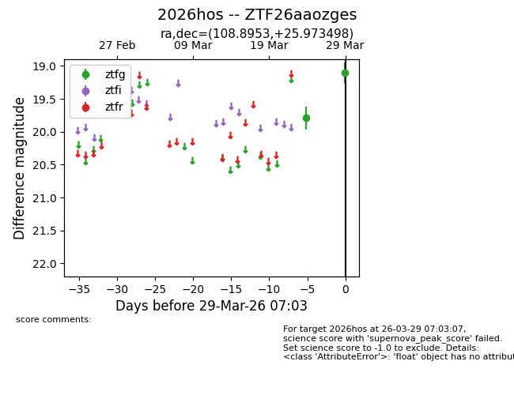
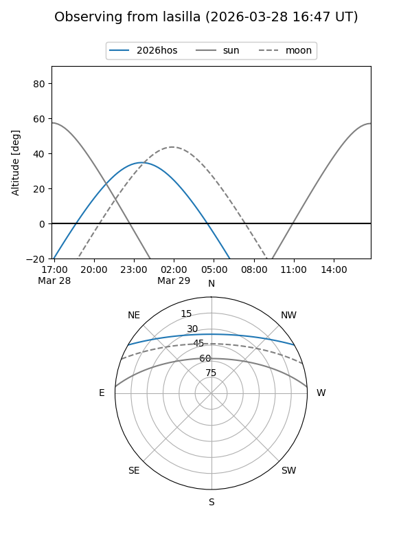
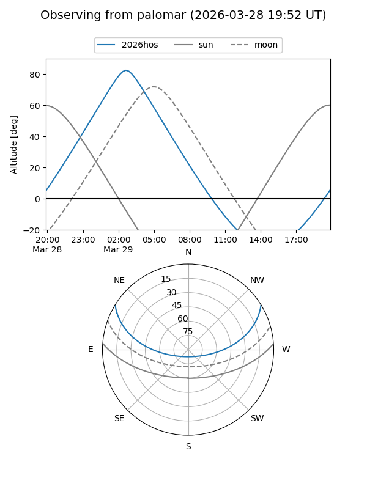
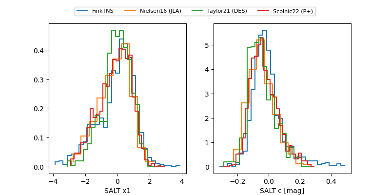

2026hos
Target 2026hos at 2026-03-29 07:07
Aliases and brokers:
FINK: link
Lasair: link
ALeRCE: link
TNS: link
YSE: link
alt names
ZTF26aaozges (ztf,fink_ztf)
2026hos (tns,yse)
Coordinates:
equatorial (ra, dec) = 108.8953,+25.97350
equatorial (HMS+DMS) = 07:15:34.88,+25:58:24.59
galactic (l, b) = (191.7372,+16.48899)
Flags:
Photometry:
last ztfg=19.10
2 ztfg detections
Lightcurve

Visibility


Additional plots
